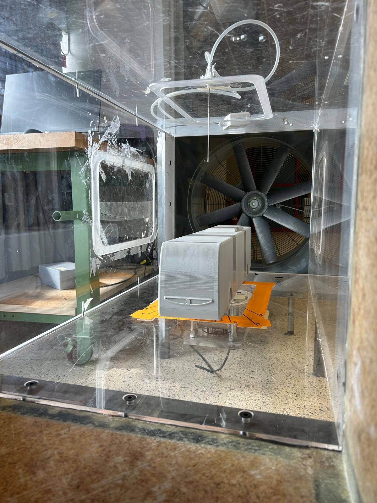
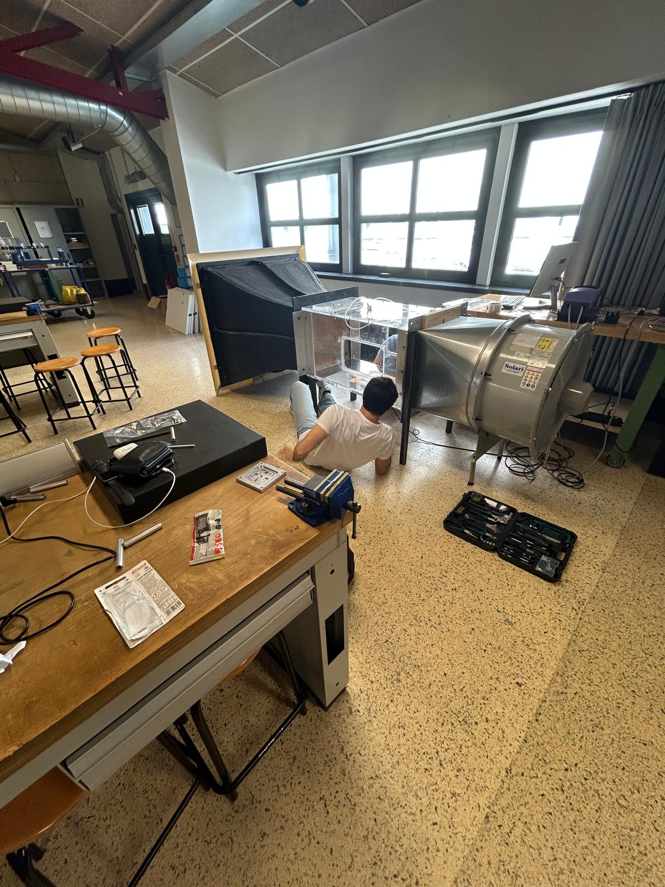
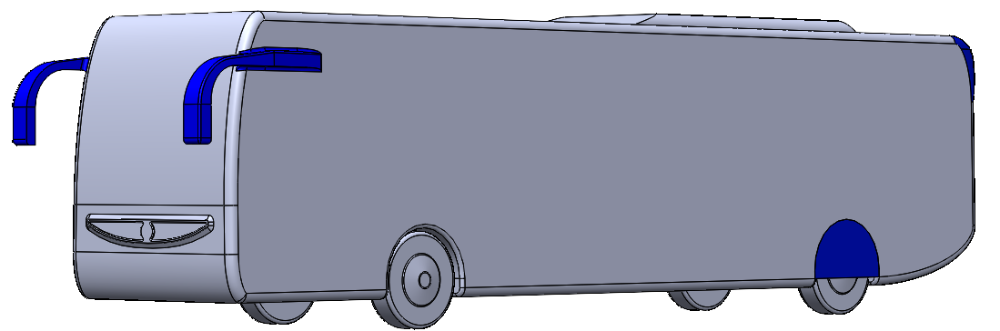
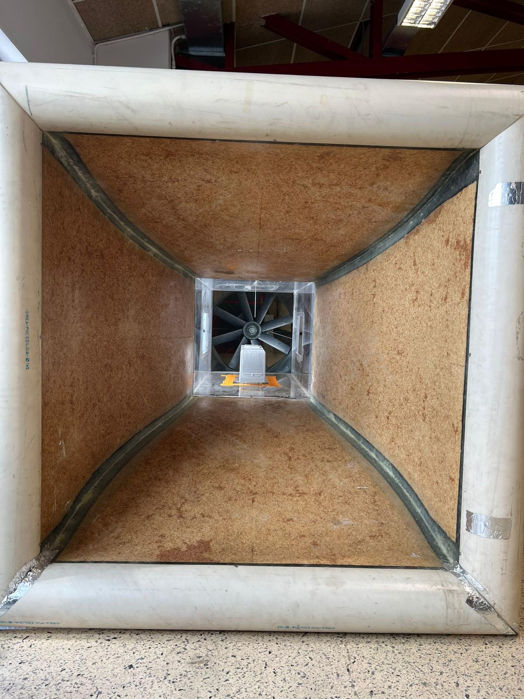
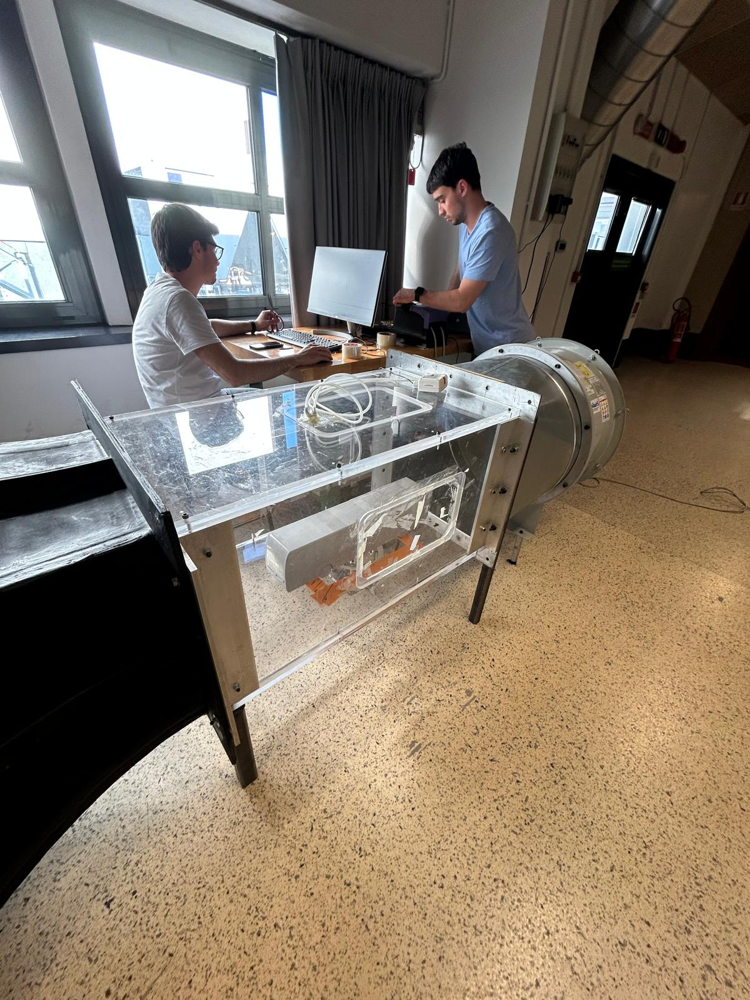
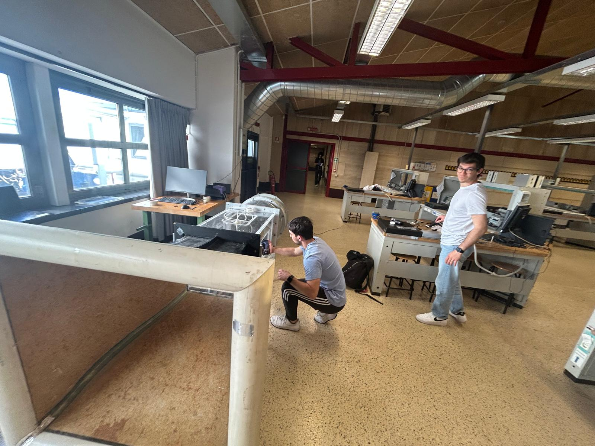
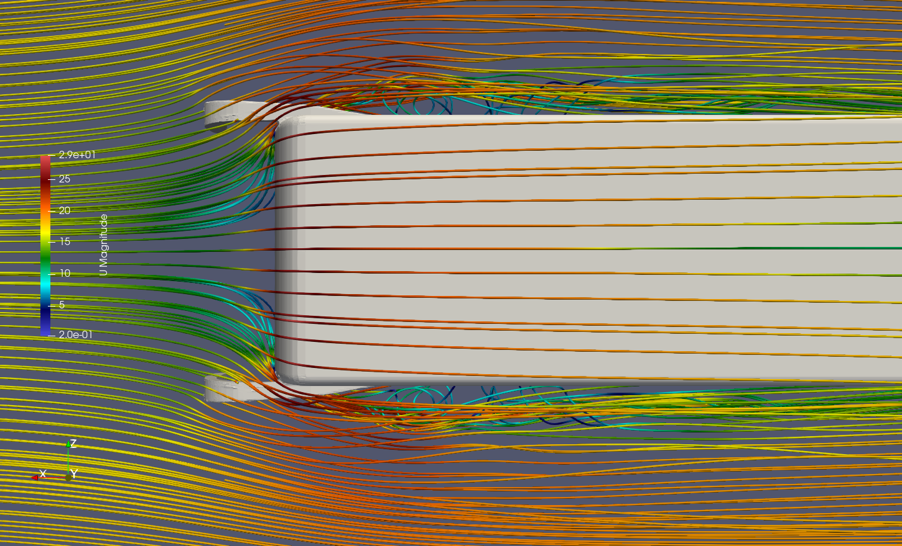
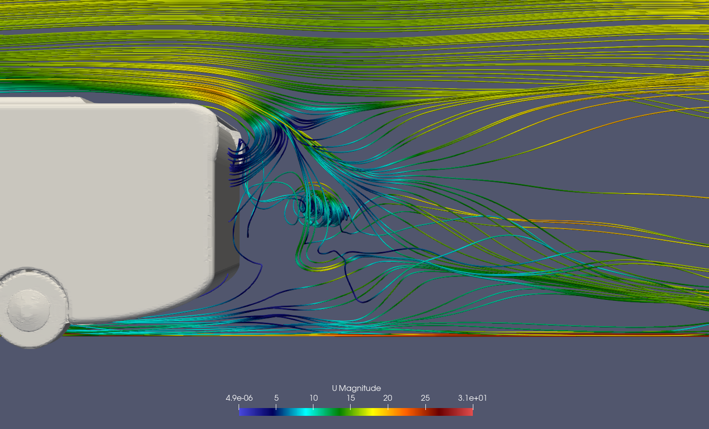
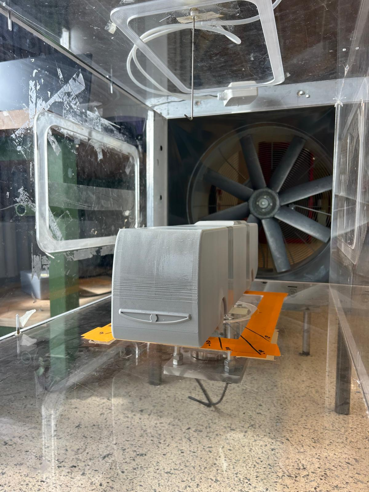

CFD · OpenFOAM · Wind Tunnel · Politecnico di Milano · A.A. 2024–2025
Wind tunnel testing and OpenFOAM CFD simulations on a 1:20 scale Mercedes-Benz Tourismo model — exploring side skirts, rear tapering, and their combined effect on drag reduction.
Overview
Long-distance coaches are characterized by large frontal areas and bluff-body geometries that produce significant aerodynamic drag. At highway cruising speeds (~100 km/h), drag can account for over 50% of total engine power — making it a prime target for efficiency improvements.
This project analyzed the aerodynamic drag of a long-distance coach inspired by the Mercedes-Benz Tourismo, modeled in SolidWorks and scaled to 1:20 for wind tunnel testing. The experimental campaign was used to validate the OpenFOAM CFD setup, after which all design modifications were tested numerically.
Four configurations were evaluated: side mirrors only (baseline), addition of side skirts, rear tapering, and a full combined configuration.

Open-circuit wind tunnel — PoliMi Aerodynamics Lab

Full configuration — mirrors + side skirts + rear tapering
Solver
OpenFOAM — simpleFoam
Turbulence model
k-ω SST (RANS)
Flow velocity
18.2 m/s (tunnel) · 25 m/s (open air)
Model scale
1:20 — 3D printed
Reynolds number
Re ≈ 7.6 × 10⁵
Mesh cells
~9.1 million (open-air)
Blockage ratio
8.1% (wind tunnel)
Validation
CFD vs wind tunnel — excellent agreement



Experimental campaign
The 1:20 scale bus model was 3D printed and installed in the open-circuit wind tunnel at Politecnico di Milano. A Pitot tube measured dynamic pressure to determine freestream velocity; a load cell measured longitudinal drag force for direct C_d computation.
Six consecutive acquisitions were performed at each test condition, sampling at 125 Hz for ~40 seconds. A Reynolds independence study confirmed that above 10 m/s the drag coefficient becomes geometry-dominated — validating the use of wind tunnel data for CFD comparison regardless of exact Reynolds matching.
Wind tunnel and CFD results showed excellent agreement on drag coefficient, confirming the numerical setup before extending the analysis to open-air conditions.
Drag reduction analysis
All modifications were evaluated in open-air conditions at 25 m/s using the validated CFD model. The baseline (mirrors only, C_d = 0.5052) served as reference. Results show that rear tapering is by far the most effective individual device, while the full configuration nearly recovers all the drag added by the mirrors.
Mirrors only (baseline)

Side mirrors are mandatory but aerodynamically costly. They generate local flow separation and vortices at the front corners, creating recirculation zones that increase parasitic drag.
Mirrors + Side skirts
Rear wheel arch covers block lateral inflow into wheel housings, reducing underbody turbulence and narrowing the wake. Modest individual effect but synergistic with other devices.
Mirrors + Rear tapering

Most effective single modification. The tapered rear extension keeps the outer flow attached longer, collapses the recirculation bubble significantly, and reduces wake cross-section — delivering the largest individual drag reduction.
Full configuration
Combined mirrors + skirts + tapering. Nearly recovers all the drag added by mirrors, returning the drag coefficient close to the mirrorless baseline — confirming that the base shape was already well optimised.
Takeaway
The base Mercedes-Benz Tourismo geometry was already aerodynamically competitive, with a rear chamfer acting as a passive diffuser. This left limited room for improvement — but the full configuration still delivered a significant drag reduction relative to the realistic mirrored baseline.
Knowing that every 2% reduction in drag translates to roughly 1% fuel savings, even modest improvements have meaningful economic and environmental impact at scale — particularly relevant for electric buses where range is directly at stake.
Future work could extend the analysis to crosswind conditions, where fairings may show greater benefit, and explore active solutions such as digital mirrors or adaptive rear geometries.

Bus model mounted in test section — load cell measuring longitudinal drag force